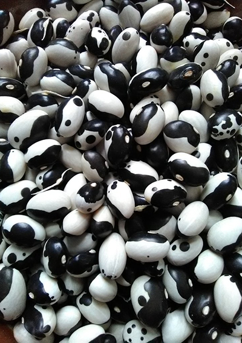

Bønne
Phaseolus vulgaris L. Amateurras 'Yin-Yang'
- Type: Buskbønne
- Højde: 40 cm
- Såafstand: 25 cm
- Rækkeafstand: 25 cm
- Sådybde: 3 cm
- Lysforhold: Fuld sol
- Forspiring: April
- Udplantning/såning på friland:Maj Juni
- Spiring efter: ca. 10 dage
- Moden til høst efter: ca. 63 dage
Beskrivelse:
Kaldes også Calypso-bønne. Yin-Yang kommer oprindelig fra Caribien. Det er en af de bedste sorter til bagning og supper. Yin-Yang har smukke, sorte og hvide frø med modsat farvede øjne (deraf navnet yin-yang). De mister dog næsten hele farven, når de koges.
Yin-Yang har dobbeltfunktion som bønne, idet den både kan spises som friske, kogte, grønne bønner - så skal du bare tage dem, når de er helt unge. Eller du kan efterlade bælgene på planten for at tørre naturligt. Evt. lad dem tørre helt færdigt et køligt, tørt sted. De tørrede bønner kan derefter afskalles og opbevares i lufttætte krukker, men det er derefter nødvendigt at lægge dem i blød natten over før de bruges i madlavningen.
Såning: Læg evt. frøene i blød natten over før såning. Vand såområdet før såning. Hold dem fugtige under spiringen. Forspir indendørs fra slut april eller så direkte på det blivende sted fra midt maj til midt juni.